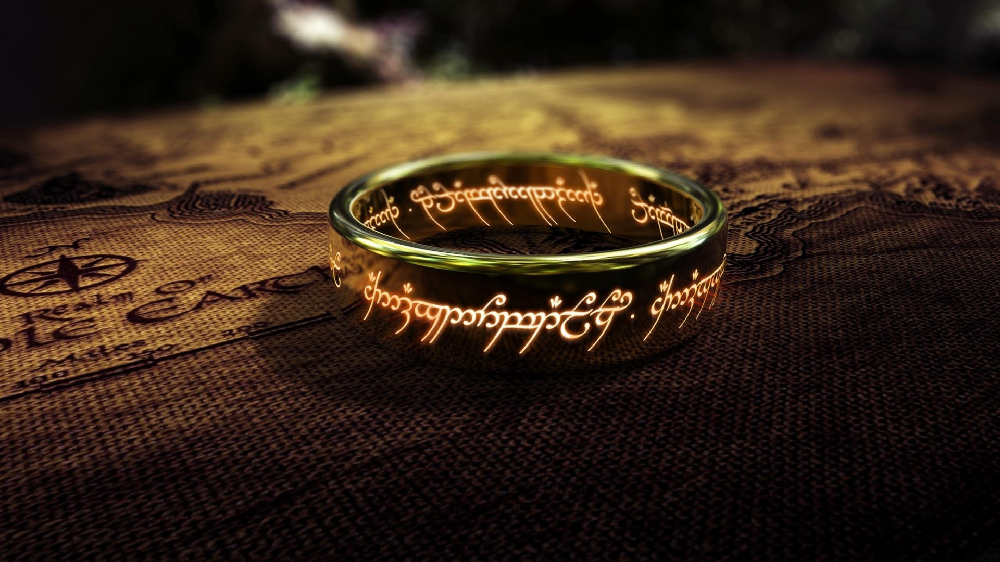
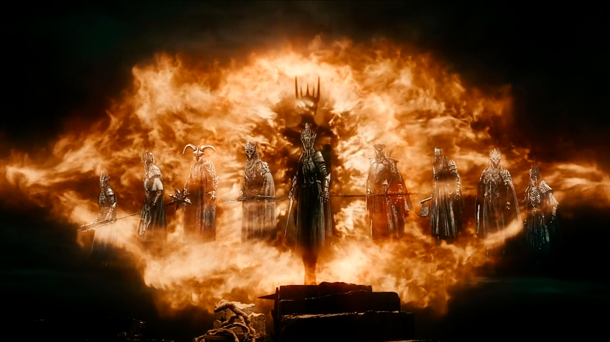
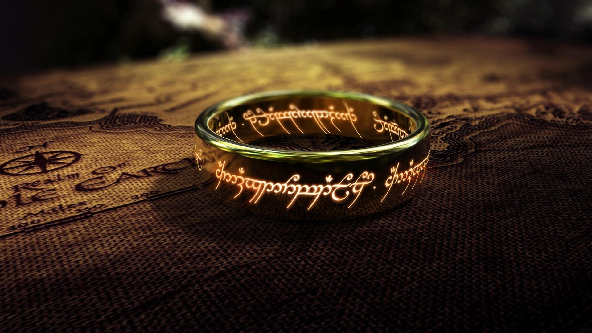
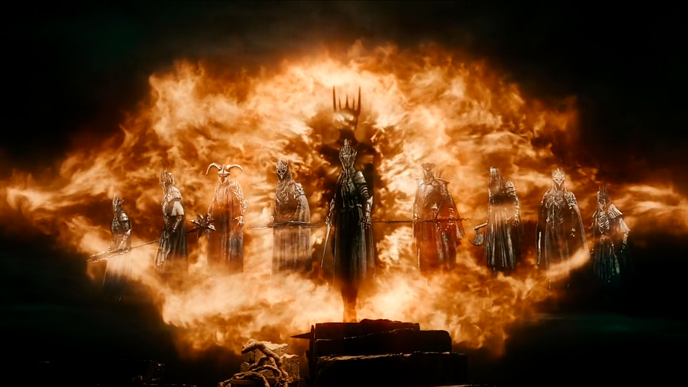

Gandalf
Gandalf o Branco Quando retornei como Gandalf, o Branco, meu propósito tornou-se mais claro e minha força foi renovada. Fui enviado de volta para guiar e liderar na luta contra as sombras de Sauron. A batalha era iminente, e meu papel era unir os povos livres e garantir que o bem prevalecesse.
Legolas
Legolas, o elfo de olhos atentos e habilidades inigualáveis com o arco, foi um companheiro valoroso na nossa jornada. Sua agilidade e visão aguçada foram cruciais em muitas batalhas, e sua lealdade ao grupo nunca vacilou.
Aragorn
Aragorn, o herdeiro dos tronos de Gondor e Arnor, é um líder nato, destinado a unir os homens na luta final contra Sauron. Sua coragem e humildade fazem dele não só um rei, mas também um amigo e companheiro digno de confiança.
Smeagol
Sméagol, uma criatura uma vez inocente, foi corrompido pelo poder do Um Anel, transformando-se em Gollum. Ele é um exemplo trágico de como o Anel pode distorcer o espírito, e sua dualidade entre o bem e o mal é um lembrete constante do perigo que enfrentamos.
Minas Tirith
Minas Tirith, a Cidade Branca, é o último baluarte dos homens contra as trevas que se avizinham. Com suas muralhas imponentes e história grandiosa, é um símbolo de esperança e resistência, mas também carrega o peso do destino de toda a Terra Média.
O um Anel
O Um Anel é a fonte do poder de Sauron, criado para dominar todos os outros. Ele corrompe e consome aqueles que o possuem, e nossa missão de destruí-lo foi cheia de desafios, pois sua influência é poderosa e insidiosa.
Sauron
Sauron é a encarnação do mal na Terra Média, sempre à espreita, buscando dominar todos sob sua vontade. Sua presença é sentida em cada sombra, e sua ambição de submeter o mundo ao seu poder é o maior desafio que enfrentamos.